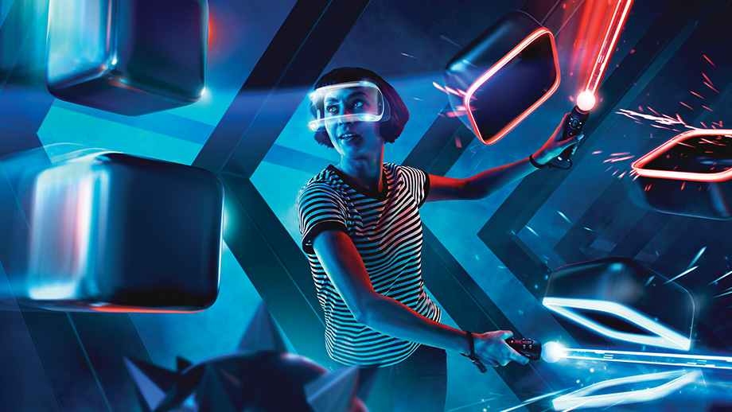
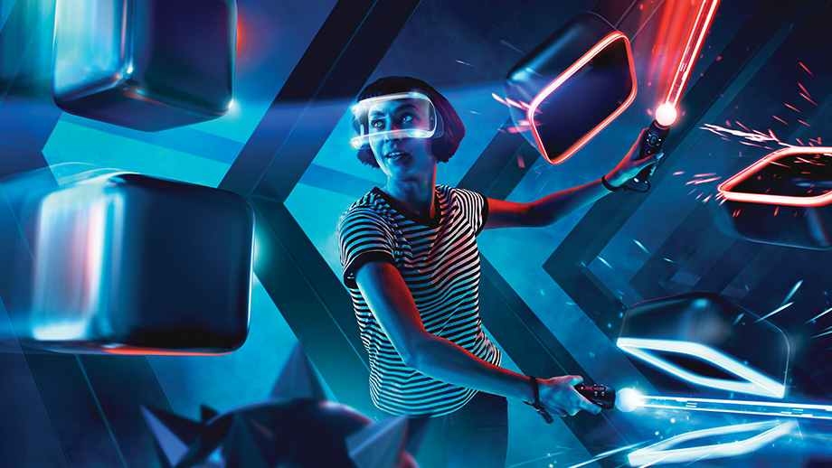

Welcome to my page, here I will inform you on an impact of Collaborative Telepresence on Entertainment.
Telepresence has had a huge impact on the evolution of video game graphics and devices, with new games being released yearly with better and more realistic visuals. Virtual Reality games have been fictional for a while with it being demonstrated in children’s cartoons. Now in 2019 VR is here and it is very popular, with modern game titles being ported (designed) for the headsets. Simulator games have developed so that players can physically interact with in-game people ,tools ,weapons etc. Viewing movies and events with your friends can easily be done without anyone leaving their house. Movies have also be using telepresence techniques along 3D to create 4-D films. Examples of this is Shrek 4-D ,a movie at universal theme parks that features an original 3D film plus an extra dimension of effects like drops of water splashed in the faces of viewers and wobbling movie chairs giving the sense of gravity etc. Telepresence devices such as VR and AR headsets have come along way and continues to evolve to become easily assessable, more immersive and are changing the way we view entertainment.

 
